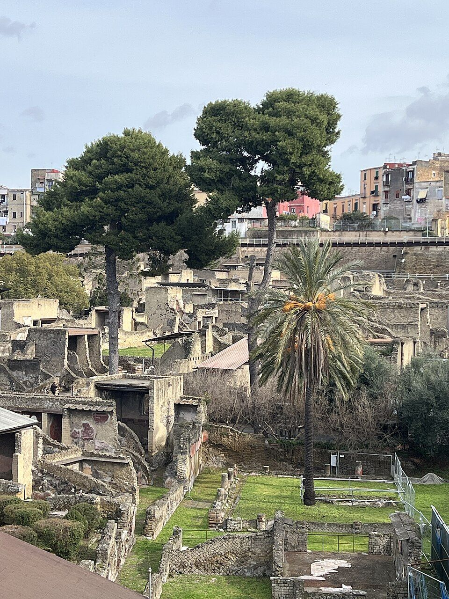

An ancient library.
A very modern
problem.
In 79 CE, Vesuvius buried the town of Herculaneum and a library of papyrus scrolls. The heat turned them to carbon. They survived, but are too brittle to open: early attempts to unroll them damaged or destroyed many.
Since 2023 the Vesuvius Challenge, an open-science effort with shared data and prizes, has been reading them from 3D X-ray scans instead.
History & sources →What does “ash” mean here? +
Volcanic ash is fragmented rock, minerals and volcanic glass. Hot pyroclastic currents carried gas and volcanic debris through Herculaneum. The papyri that survived were carbonized; they did not become the volcanic ash that buried them. USGS explanation →

Hot pyroclastic currents carbonized the papyri, and volcanic deposits buried the library. The surviving rolls are brittle and damaged, but can still preserve traces of ancient writing.
Photograph: Van Der Meulen Christofle · CC0.
A scan is not yet a book.
A CT scan gives you . Reading needs a chain of separate discoveries. Explore each step.
Look inside without opening it.
CT reconstructs a 3D image from X-ray measurements taken at many angles. PHerc. Paris 4, the scroll used in this guide’s examples, has been scanned several times. Its main full-scroll scans were made at the Institut de France in Paris in 2009 (lab micro-CT, about 24 µm voxels), on the I12 synchrotron beamline at Diamond Light Source in 2019 (7.9 µm), and in 2026 on the ESRF’s BM18 synchrotron beamline in Grenoble at 2.4 µm, plus lower-resolution overviews and higher-resolution partial scans. BM18 uses phase contrast: it records how the sample shifts the X-ray wave as well as how much it absorbs, which sharpens thin boundaries. The volume can reveal layers, folds and gaps, but does not automatically identify which parts belong to the same layer of papyrus.
OUTPUT → A 3D GRID OF RECONSTRUCTED CT VALUESWhy not just trace each layer?
Words in this guide: a turn is one revolution of the roll. A layer is the papyrus at one turn (tools often call it a sheet). A surface is a reconstructed candidate for a layer.
The eruption’s heat and centuries of burial squashed and distorted the rolls. In the scan, neighbouring turns often press against each other, and where they touch the boundary between them can fade into a single band.
A method that follows a surface step by step can drift onto the neighbouring turn without noticing. This is often called a sheet switch. Every region traced after it belongs to the wrong layer, and the text it yields stops making sense.
One wrong step can spoil everything that follows. We created winding-field to make such errors less likely to propagate: it fits one coordinate to a whole local volume at once, so each clue is weighed against all the others instead of being followed step by step. A bad clue can still bend the result quietly; chapter 03 shows how.
Can one number follow a layer?
Move a probe through a synthetic field and watch the coordinate change.